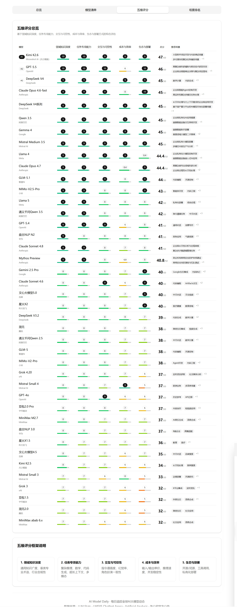
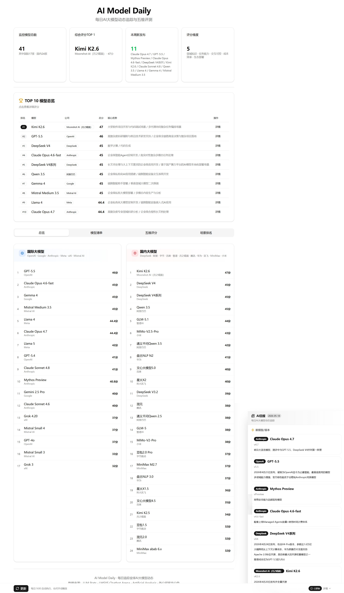
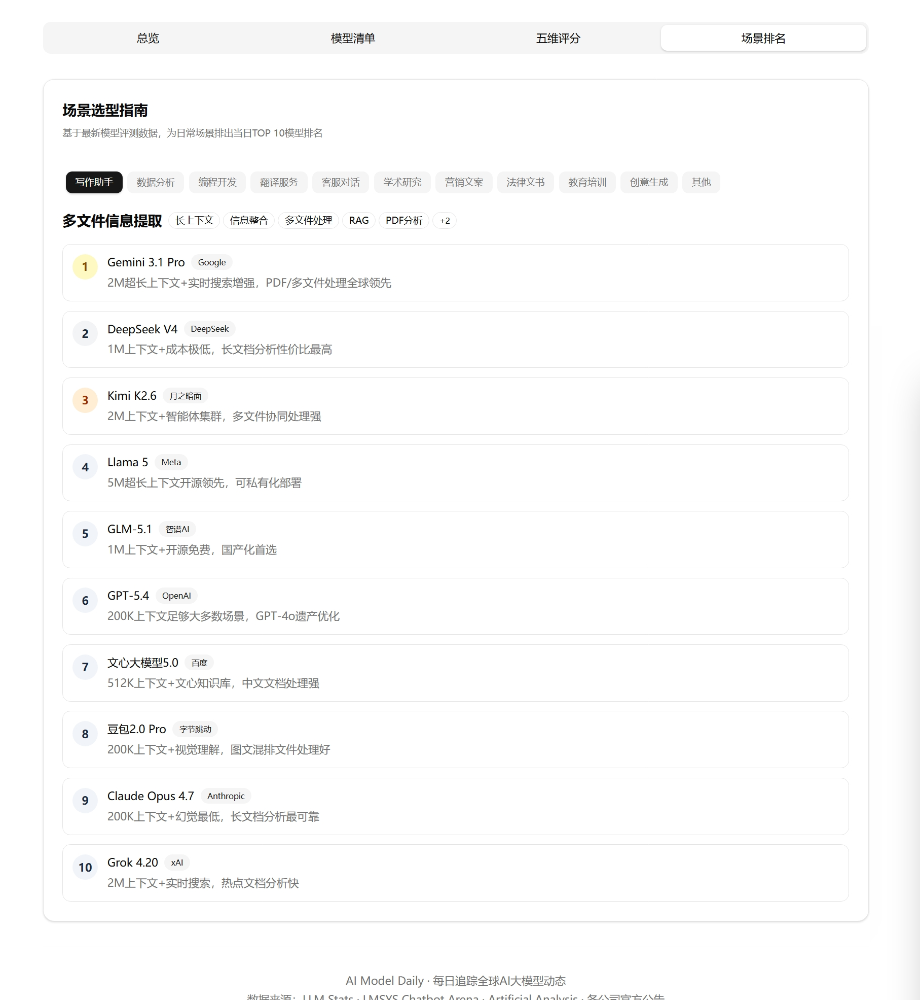
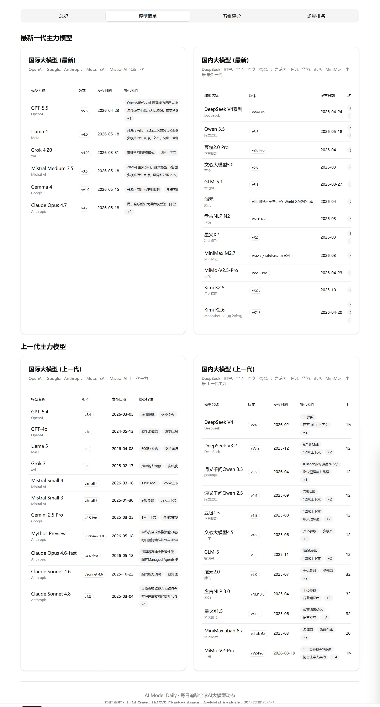

每日追踪全球AI大模型动态 · 五维评估框架 · 场景化选型推荐
基于Coze平台搭建，每日自动抓取多源数据，输出结构化日报与排名
2025年下半年起，AI行业进入"无稳定范式"阶段，模型日更级迭代，但信息分散在Twitter、HuggingFace、各公司博客等6+平台，缺乏统一评估标准。
作为准备转型AI PM的开发者，我自身面临严重的信息焦虑——今天OpenAI发GPT-5.4，明天DeepSeek更新V4，后天Google推Gemini 3.1 Pro，却不知道新模型和旧模型有什么区别、可以用在哪里。访谈3位正在用AI做项目的开发者朋友后，确认这是行业共性问题：选型靠试错，平均花费2天手动对比多平台数据。
这不是我个人的焦虑，而是一个可以被产品化解决的效率问题。
参考行业主流基准测试（AIME测数学、GPQA测科学、SWE-bench测代码、HumanEval测编程），但做了产品化改造——把技术评测转化为用户可理解的选型维度。
每项1-10分，将"模型很强"转化为"场景X适合用模型Y，因为Z"。例如：Grok 4.20强调"实时网络搜索+2M上下文"，立即标记为"信息检索类任务首选"；Claude Opus 4.7强调"高清视觉解析+工程代码"，标记为"代码审查+文档分析首选"。

图1：五维评分总览页（领域知识/任务专项/交互可控/成本效率/生态部署）
基于最新模型评测数据，输出综合评分TOP 10排名，同时按国际大模型与国内大模型分类展示，方便不同部署环境下的选型参考。

图2：TOP 10模型总览 + 国际/国内大模型分类看板
日常使用中意识到五维评分颗粒度不够——比如"任务专项能力"维度下，某模型逻辑推理强但创意生成弱。因此设计二级标签体系，将每个维度拆分为子能力标签，让"场景匹配"更精准。
覆盖场景：多文件信息提取、文件内容对比、创意写作、视频脚本、图片生成、代码编程、数据分析、多语言翻译、语音对话、日常通用等。

图3：场景选型指南（多文件信息提取等11个场景当日TOP 10）
建立"模型清单"档案页，分国际/国内两大阵营，记录每款模型的版本、发布日期、核心特性、上一代主力、模型特点。解决"新模型和旧模型有什么区别"的对比痛点。

图4：最新一代主力模型档案（国际/国内分类，含版本、特性、对比）
设计每日更新流水线，解决信息聚合与持续运营问题：
工程约束与解决方案：Coze沙箱环境容器会回收导致定时任务丢失。设计"一键更新"手动触发 + 外部cron-job.org定时调度的双保险方案，保证日报可用性。
过去30天基于日报完成2个真实选型决策：
1. 习惯App图像生成模块：对比Seedream 5.0 Lite与Midjourney v7，最终选择Seedream——因为成本效率维度得分更高，免费额度足够MVP使用。
2. 个人技术内容写作：固定使用Kimi K2.6，因为超长上下文窗口维度得分最高，适合长文档分析。
方法论沉淀：建立可复用的模型评估方法论，训练出"5分钟判断新模型价值"的能力：1分钟提取发布信息→2分钟五维初评→2分钟场景匹配标记。